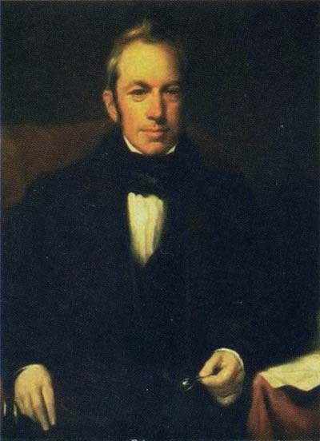
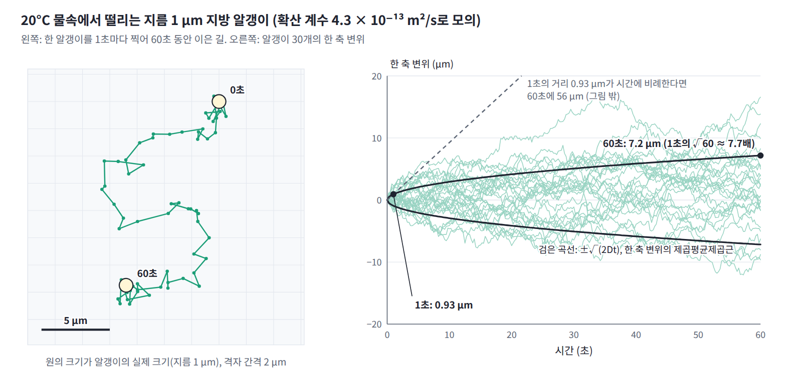

브라운 운동: 속도가 없는 길
칸과 걸음을 한없이 잘게 만들면, 속도가 없는 격자 위의 길은 어떤 길이 될까? 그리고 그 길은 한 식으로 어떻게 적을 수 있을까?
역사: 떨리는 꽃가루 알갱이
1827년 여름 식물학자 로버트 브라운은 물에 띄운 꽃가루에서 나온 작은 알갱이들이 쉬지 않고 떨리는 것을 현미경으로 보았다. 그는 생명 현상을 의심해 오래 말린 표본과 돌가루까지 물에 띄워 보았지만 똑같은 떨림이 나타났다. 1905년 아인슈타인은 이 떨림을 물 분자의 충돌로 설명했다. 그는 알갱이마다 다른 알갱이와 상관없이 움직이고 한 알갱이의 움직임도 시간 구간마다 서로 상관없다고 가정해, 알갱이들의 분포가 확산 방정식을 따르고 한 방향으로 옮겨 간 거리의 제곱평균제곱근이 √(2Dt)임을 보였다.

연속한 극한: 브라운 운동
격자 걷기에서 본 「속도가 없다」는 성질은 칸과 걸음을 한없이 잘게 만들면 더 분명해진다. 칸 간격 a와 한 걸음의 시간 τ를 줄이면서 확산 계수 D = a²/(4τ)를 고정하면, 사람들의 분포는 점점 매끄러워져 열 방정식 ∂ρ/∂t = D∇²ρ를 따르지만 한 사람의 길은 매끄러워지지 않는다. 시간 Δt 동안 한 축으로 옮겨 가는 거리는 √(2DΔt) 정도인데, Δt가 작을 때 √Δt는 Δt보다 훨씬 크다. 그래서 길은 끊어지지 않고 이어져 있지만 어느 곳에서도 속도, 곧 Δx/Δt의 극한이 없다.
정리하면, 동전으로 걷는 사람 하나의 길과 그런 사람 여럿의 분포는 같은 과정을 두 쪽에서 적은 것이다. 한 사람의 길은 무작위하고 거칠어서 속도가 없고, 그 대신 변위의 분산이 시간에 비례해 쌓인다. 여러 사람의 분포는 결정론적이고 매끄러워서 이웃 평균, 곧 열 방정식을 따른다.
극한의 길을 식으로 적어 보자. 동전의 규칙에서 출발하면, 한 축에서 한 걸음의 분산이 a²/2이고 한 걸음에 시간 τ가 걸리므로, 단위 시간에 쌓이는 분산은 a²/(2τ) = 2D다. 극한의 길은 잘게 나눈 시간 Δt마다 평균 0, 분산 2DΔt인 독립 변위를 더해 간다. 걸음이 많이 모이면 변위의 분포는 동전 대신 무엇을 썼든 정규분포가 되므로, 처음부터 정규분포로 적어도 된다.
이런 길을 브라운 운동 (시간 구간마다 평균 0, 한 축 분산이 2D × 구간 길이인 독립 정규 변위를 더해 가는 연속한 길, Brownian motion)이라 한다. 식에서 Δt를 반으로 나눠 두 번 더해도 분산이 DΔt + DΔt로 똑같이 2DΔt이므로, 시간을 어떻게 나누든 같은 길이 나온다. 잡음 앞에 √Δt가 붙는 이유가 이것이다. 잡음 앞에 Δt를 붙이면 반으로 나눈 두 걸음의 분산 합이 원래의 절반이 되어, 시간을 잘게 나눌수록 잡음이 사라져 버린다. 분산 2D = 1인 경우, 곧 한 축에서 시간 t 동안의 분산이 t인 것을 표준 브라운 운동 B(t)라 하고, 짧은 시간 dt 동안의 변화 dB를 √dt × 표준정규 잡음으로 읽는다.
우유 한 방울을 물에 묽게 풀어 현미경으로 보면 지름 1 μm쯤 되는 지방 알갱이들이 쉬지 않고 떨리는 것이 보인다. 20°C 물속의 지름 1 μm 알갱이는 확산 계수가 약 4.3 × 10⁻¹³ m²/s여서 한 축으로 1초에 약 0.93 μm, 1분에 약 7.2 μm 옮겨 간다. 1분에 옮겨 간 거리가 1초의 60배가 아니라 √60 ≈ 7.7배다.

ML에서: 잡음을 나눠 더해도 같은 분포
분산 폭발형 확산 모델은 이미지에 표준편차가 커져 가는 정규 잡음을 더해 가는데, 이것은 픽셀마다 브라운 운동을 돌리는 것과 같다. 그래서 잡음을 나눠 더할 때는 표준편차가 아니라 분산이 더해진다. 표준편차 0.3인 잡음을 두 번 더한 이미지는 표준편차 0.6이 아니라 √(0.3² + 0.3²) ≈ 0.424인 잡음을 한 번 더한 것과 같은 분포를 따른다. 잡음 수준을 몇 단계로 나누든 같은 분포에 이른다는 성질 덕분에, 학습할 때는 중간 단계를 거치지 않고 원하는 수준의 잡음을 한 번에 더해 샘플을 만든다.
문제 1. 현미경으로 잰 속도
선생님의 수업. 김민준(학부 3학년, ML 강의 몇 개 수강)과 이서연(수학과 3학년)이 문제를 풀고, 선생님이 틀린 곳을 짚는다.
20°C 물속에 지름 1 μm, 밀도 1.05 g/cm³인 알갱이가 떠 있다. 확산 계수는 D ≈ 4.3 × 10⁻¹³ m²/s다. 현미경 영상에서 Δt 간격으로 위치를 찍어, 한 축으로 옮겨 간 거리의 제곱평균제곱근을 Δt로 나눈 값을 「속도」로 잰다. (가) Δt = 1초, 0.01초, 10⁻⁴초에서 잰 속도는? (나) 운동에너지로 정해지는 알갱이의 열속도 √(kT/m)는? (다) 두 값은 어떻게 이어지는가?
옮겨 간 거리가 √(2DΔt)니까 Δt로 나누면 √(2D/Δt)예요. 1초면 0.93 μm/s, 0.01초면 9.3 μm/s, 10⁻⁴초면 93 μm/s요. 카메라를 좋은 걸로 바꿀수록 알갱이가 빨라지네요? 초고속 카메라를 사면 무한대가 나오겠는데요.

동전으로 걷는 사람이랑 같아. 재는 간격을 네 배로 늘리면 빠르기가 절반이었잖아. 속도가 정해지지 않는 길이야.

그런데 알갱이는 질량이 있는 물체예요. 온도 T의 물속에 있으니 (나)도 계산할 수 있죠.

방향 하나당 운동에너지 평균이 kT/2니까 열속도는 √(kT/m)이에요. 질량이 5.5 × 10⁻¹⁶ kg이라 2.7 mm/s예요.
2.7 mm/s면 1초에 자기 지름의 2700배를 가는 속도잖아요. 그런데 1초에 1 μm도 못 간다고요? 둘 중 하나가 틀린 것 같은데요.
둘 다 맞아요. 그 속도를 얼마나 오래 유지하는지 보세요. 마찰 계수는 스토크스 법칙으로 ζ = 6π × 점성 × 반지름 = 9.4 × 10⁻⁹ kg/s이고, 운동량은 m/ζ의 시간 안에 줄어들어요.
5.5 × 10⁻¹⁶을 9.4 × 10⁻⁹로 나누면… 5.8 × 10⁻⁸초, 58나노초요. 그동안 2.7 mm/s로 가면 0.16 nm밖에 못 가요. 원자 하나 크기도 안 되네요.
58나노초마다 방향을 새로 뽑는 걸음이구나. 그보다 긴 간격으로 재면 동전 걷기처럼 보이고, 58나노초보다 짧게 재야 진짜 열속도 2.7 mm/s가 나오겠네.
그래요. 잰 속도는 간격을 줄일수록 커지다가 m/ζ 근처에서 열속도에 닿아 멈춰요. 브라운 운동은 m/ζ보다 긴 시간만 보는 근사예요. 아인슈타인이 속도 대신 일정 시간 동안 옮겨 간 거리를 예측한 것이 그래서 현명한 선택이었어요.
조교님이 제 코딩 진도를 1분마다 보면 엄청 빨리 타이핑하는데, 하루에 한 번 보면 거의 제자리인 거랑 비슷하네요. 썼다 지웠다 하니까요.